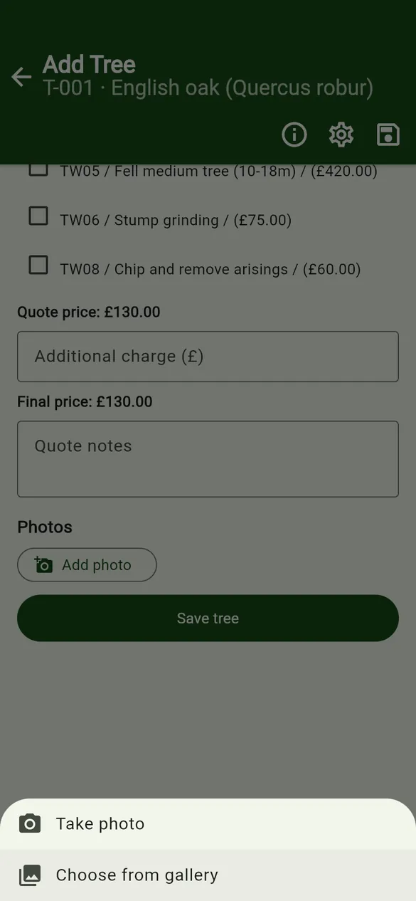
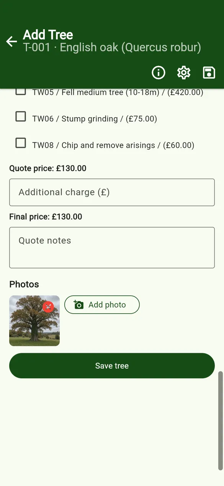
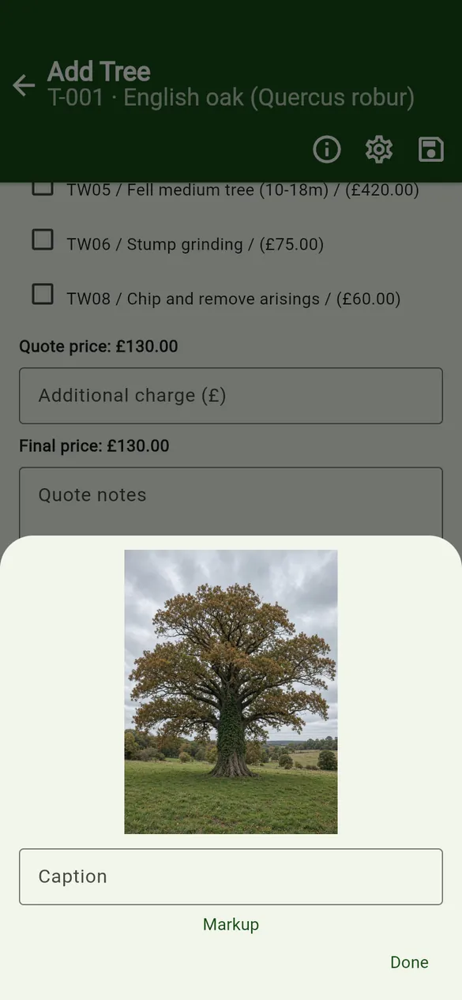
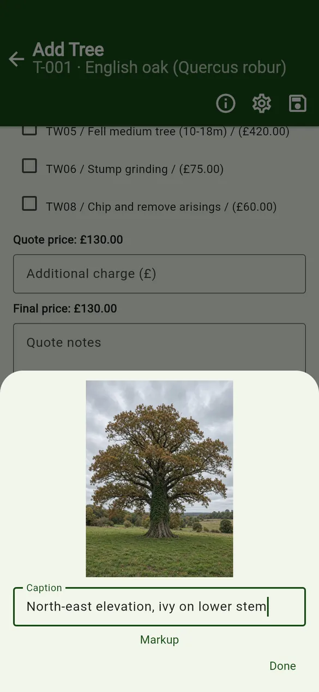
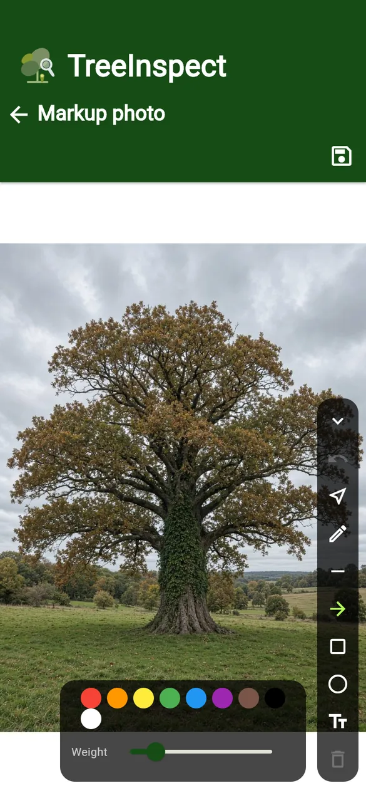
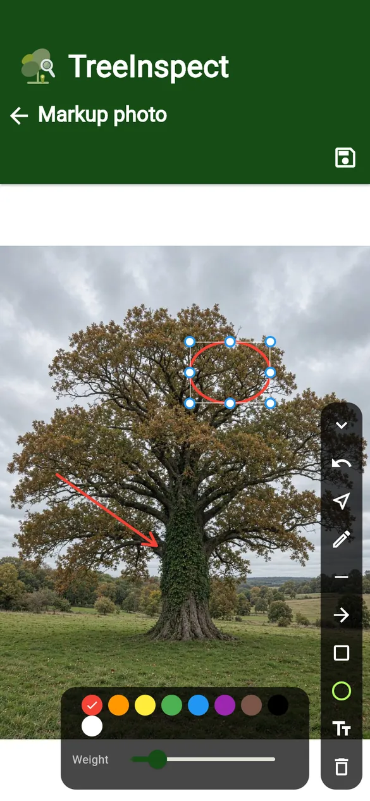
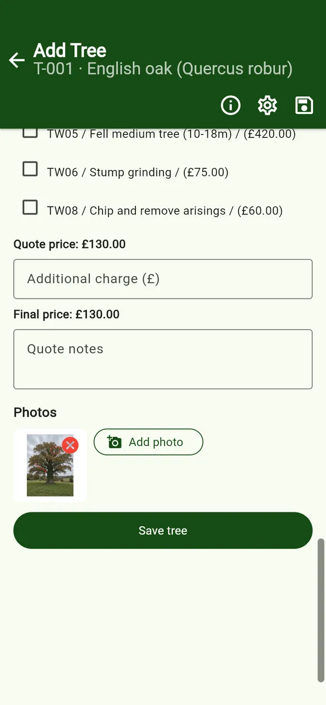

User guides › Photos and annotation
Photos and annotation
Take or choose photos, add captions, mark them up with arrows, shapes and text.
Add a photo
- Scroll to Photos on the tree form and tap Add photo.
- Choose Take photo to use the camera, or Choose from gallery.
- The photo appears as a thumbnail. The × on a thumbnail removes it.



Caption
Tap a thumbnail and type in Caption, for example North-east elevation, ivy on lower stem. A short caption can also be used in exported photo file names.
Markup
- Tap a thumbnail, then Markup.
- Choose a tool from the rail: Pen, Line, Arrow, Box, Circle or Text. Pick a colour and weight.
- Draw on the photo. Use Select to pick a shape, Delete selected to remove it, or Undo.
- Tap the save icon. The marked-up photo replaces the thumbnail.




Photo size and file names
In App options, set Max photo size (px) and JPEG quality 40-95 for new photos, and the File name pattern used when photos are exported. Tap the ⓘ next to Photo export names to see the tokens:
| Token | Meaning |
|---|---|
{id} | Item ID |
{n} | Photo number |
{caption} | Short caption |
{project} / {projectId} | Project name / project ID |
{client} / {address} | Client / address |
{kind} | Item type |
{date} | Inspection date |
{species} | Tree species |
For example the pattern {id}_{n}_{caption} gives T-001_1_north-cavity.jpg. PRO Pro can also stamp the file name onto each exported photo; the position, colour and size are set under Export setting – Photos in project settings.